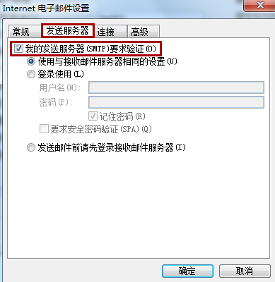
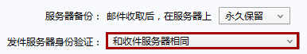

SMTP服务器
服务器连接
1.要打开命令行，开始 -> 运行，在打开框中键入 cmd，然后单击确定。
2.使用以下格式的远程登录命令，您可启动远程登录会话。确保在每行后按 ENTER 键：
1 | telnet servername portnumbe //例如:telnet mailserver.mycompany.com 25 |
3.如果命令有效，您可能会从 SMTP 服务器收到与以下类似的响应：
1 | 220 mailserver.mycompany.com Microsoft Exchange Internet Mail Connector |
有关如何继续测试，请参阅 Microsoft 知识库文章 153119 中的详细信息。
请注意，如果使用命令提示符使用左上角的闪烁光标清除屏幕，这也表明远程登录命令已连接 SMTP 服务器，并且该端口可访问。
4.如果服务器没有响应，远程登录将失败并显示如下错误：
1 | 连接至...无法在端口 25 上打开与主机的链接：连接失败 |
对 SMTP 服务器通信被阻止的原因进行疑难解答 - 最有可能是因为防火墙阻止了端口访问。
邮箱
响应服务器553
Outlook或者Foxmail收信时提示：553 Authentication is required
客户端未选择发件服务器需要身份验证，设置调整如下：
Outlook客户端在电子邮件设置中进行修改
Foxmail客户端在服务器设置中修改
